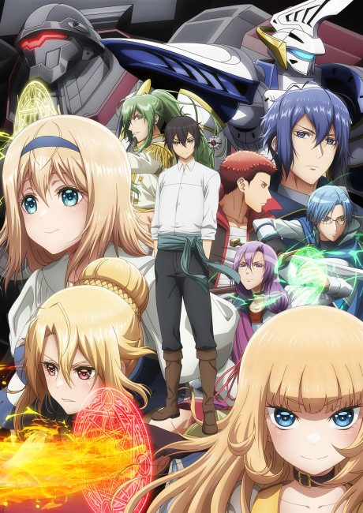
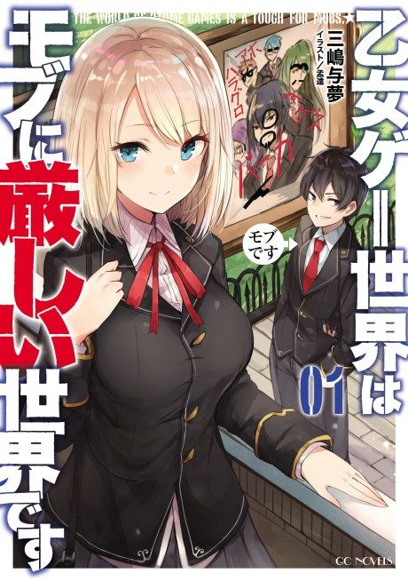

Anime
Light novelTrapped in a Dating Sim: The World of Otome Games Is Tough for Mobs
乙女ゲー世界はモブに厳しい世界です
The anime takes the story to Unclear.
7.1AniList
—Animeter
24 ep2 seasons
Anime finished. Where does the story go next?
StatusNo source yet
We looked for where the anime ends in the light novel but found no source we trust yet. The light novel is 207 chapters, finished.
More like Trapped in a Dating Sim: The World of Otome Games Is Tough for Mobs
 Manga Vol. 58.1
Manga Vol. 58.1
 Manga Vol. 157.7
Manga Vol. 157.7
 Manga Vol. 27.2
Manga Vol. 27.2
 Manga Vol. 116.5
Manga Vol. 116.5
 Unclear8.0
Unclear8.0
 Manga Vol. 117.8
Manga Vol. 117.8